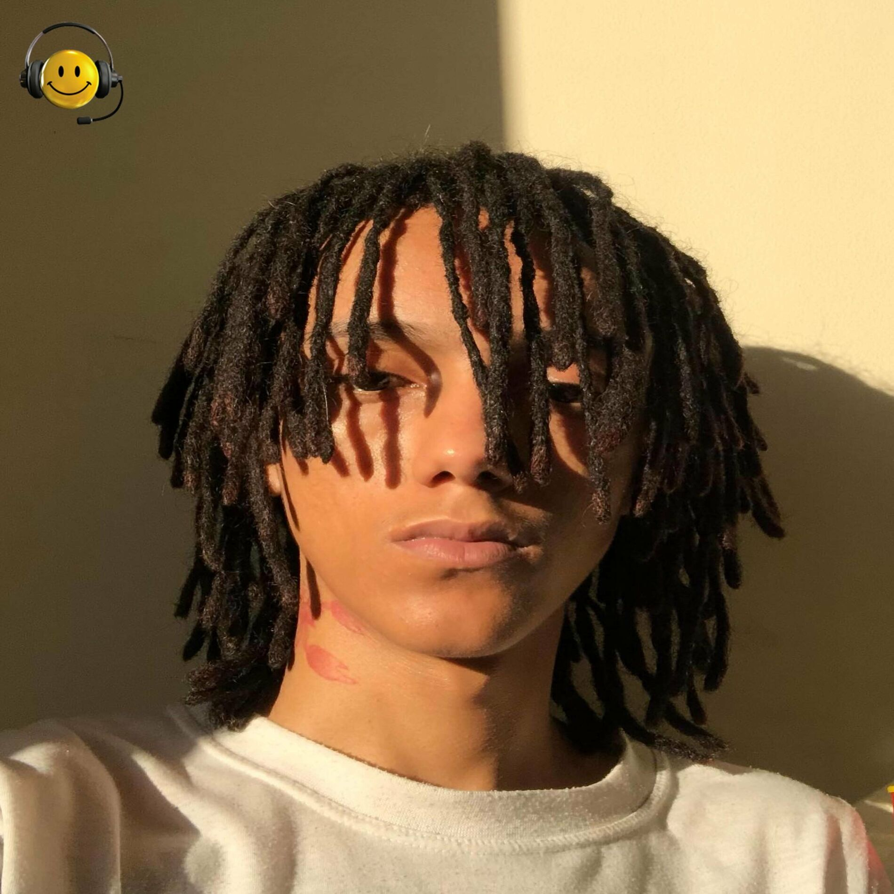
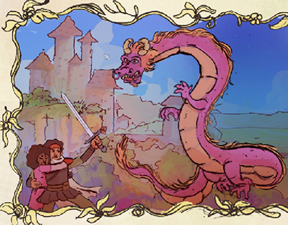
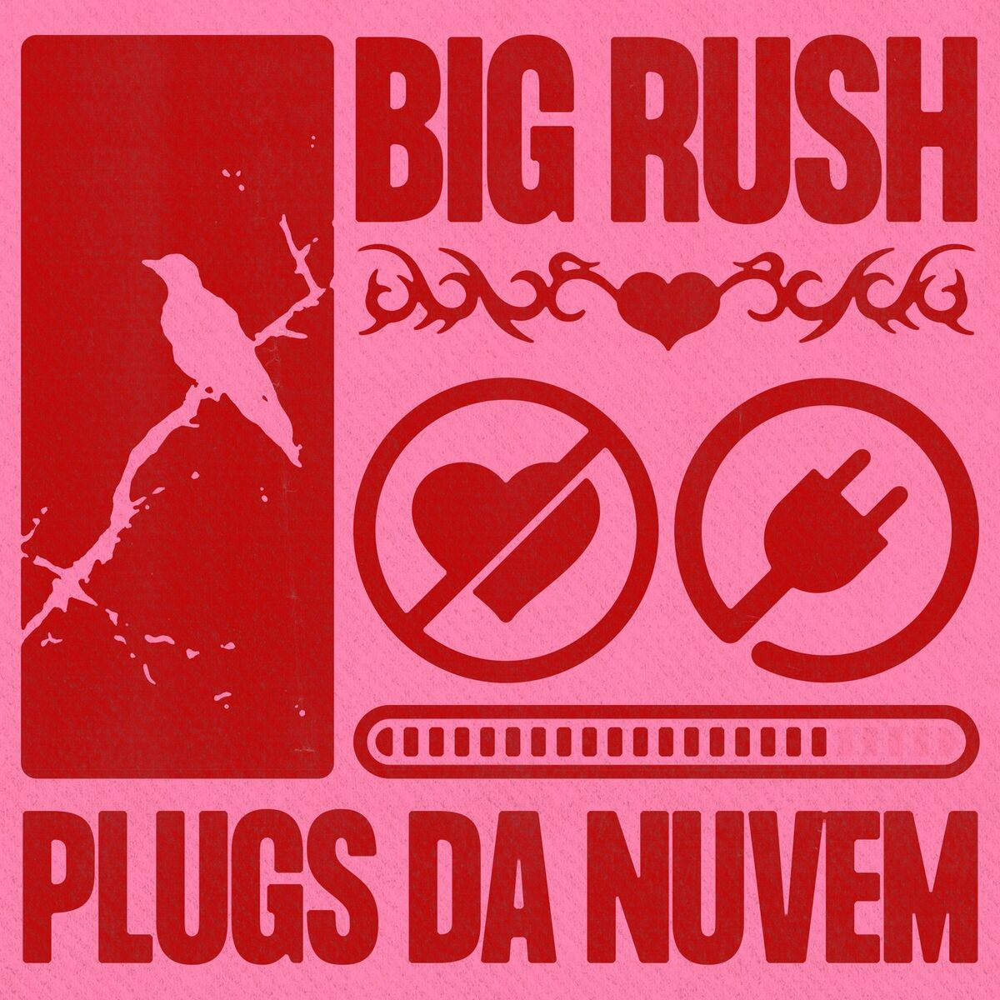
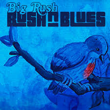

Big Rush
Big Rush é um dos artistas mais inovadores da cena musical atual, trazendo um som único que mistura hip hop e ritmos experimentais. Ele já lançou vários álbuns e continua a conquistar seu público com suas letras autênticas e presença de palco eletrizante.
Gêneros: Hip Hop, Experimental
Ativo desde: 2015

Nada Nada
Álbum:Performaces De Um Romance Porfírio
Big Rush

Tá bom
Álbum: Plugs da nuvem
Big Rush
Lencóis
Álbum:Performaces De Um Romance Porfírio
Big Rush

DOR
Álbum: RUSH & BLUES
Big Rush
Esqueci que te esqueci
Álbum: Plugs da nuvem
Big Rush